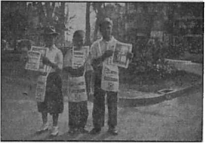
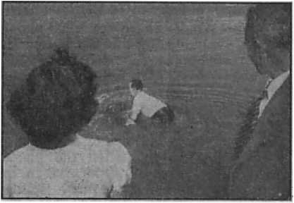

Futile attempts to drag Christians into the pagan set-up
Origin of the white robe, the triple crown, and the titles
Truth cannot be suppressed
A divine provision
New Zealand’s Dishonor
Vicious opposition to liberty and truth
Five Cents a Copy One Dollar a Year
Vol. XXIII No. 594 June 24, 1942
51.25 InCanada and Foreign Countries
Published Every Other Wednesday
Contents
The Diocletian-Galerius Conference
Artaxerxes and the Magi Priests
Origin of the Pope’s White Robe
Origin of the Blasphemous Titles
The New Government
Vigorously Pressing On in Finland
“Thy Word Is Truth”
Presenting “This Gospel of the Kingdom”
British Comment
Everlasting Dishonor for New Zealand
Published every other Wednesday by WATCHTOWER BIBLE AND TRACT SOCIETY, INC.
117 Adams St., Brooklyn, N. Y., U. S. A.
Editor Clayton J. Woodworth
Business Manager Nathan H. Knorr
Five Cents a Copy
?1 a year in the United States
*1.25 to Canada and all other countries
NOTICE TO SUBSCRIBERS
Remittances: For your own safety, remit by postal or express money order. When coin or currency is lost in the ordinary mails, there is no redress. Remittances from countries other than those named below may be made to the Brooklyn office, but only by International postal money order.
Receipt of a new or renewal subscription will be acknowledged only when requested. Notice of Expiration is sent with the journal one month before subscription expires. Please renew promptly to avoid loss of copies. Send change of address direct to us rather than to the post office. Your request should reach us at least two weeks before the date of issue with which it is to take effect. Send your old as well as the new address. Copies will not be forwarded by the post office to your new address unless extra postage is provided by you.
Published also in Greek, Portuguese, Spanish, and Ukrainian.
OFFICES FOR OTHER COUNTRIES
England 34 Craven Terrace, London, W.2
Australia 7 Beresford Road, Strathfield, N.S.W. South Africa 623 Boston House, Cape Town
Mexico Calzada de Melchor Ocampo 71, Mexico, D.F. Brazil Caixa Postal 1319, Rio de Janeiro
Argentina Calle Honduras 5646-48, Buenos Aires Entered as second-class matter at Brooklyn, N. Y., under the Act of March 3, 1879.
Innocent Incendiaries on the Farm
♦ Experiments at Iowa State College show that in thirty hours the bacteria in hay which is slightly damp will multiply more than 6,300 times, and the digestive processes of the microbes push the temperature up until, perchance, the danger point is reached and the barn burns to the ground, bugs and all. The calculations are that these innocent incendiaries are responsible for burning some $30,000,000 worth of property every year. The only way to keep them from doing this mischief is to make sure the hay is dry when put in the mow, and that the mows are not made too large. So say the experts.
Dried Vegetables and the War
♦ 350 pounds of dried peas weigh 4,000 pounds when they are canned and packed. In ordinary times this 3,650 pounds of water could be carried around and nobody would give much attention to it, but now space is at a premium and it is different. In the case of tomatoes it is even more noticeable. 125 pounds of dried tomatoes, if canned in the usual manner, weigh 1,800 pounds. The peas ratio is 1 to 10.5 parts water; the tomato ratio is 1 to 13.5 parts water. At the moment there are big opportunities for those that know how to select, dry and pack foods.
Too Many Blessings
♦ The cry arises in some quarters that the Lord has blessed America.with more food than it can handle. There are not enough elevators to receive the wheat, nor enough railroad cars to carry it. The food is urgently needed abroad, but the ships are needed for planes and cannons and other features of those “moral achievements of man” in which the Federal Council of Churches offered to clothe the world a little while back. This "moral achievement clothing’ seems to have thus far reached only the diaper stage, and undersized diapers at that.
“And in His name shall the nations hope.”—Matthew 12:21, A.R.V.
Volume XXIII Brooklyn, N. Y., Wednesday, June 24, 1942 Number594
Origin of the Roman Hierarchy
THE year 305 (A.D.) stands ont as one of the great mileposts of civilization. Diocletian, one of the last pagan-emperors of what was left of the Roman Empire, was elected in the year 284. He reigned until 305, when he suddenly, and apparently unexpectedly, dropped the Imperial purple and retired from public life.
His predecessor, Aurelian, had made a supreme effort to establish the pagan worship of the Unconquered Sun with himself as the highest earthly representative of the sun. (The History of Medieval Europe, By Lynn Thorndike, Revised Edition, pages 70, 71)
Under Diocletian paganism, the state religion of the Romans, was to be repaired, reinforced and continued stronger than ever. Christianity, the “new religion” that was distracting the minds of the masses, was to be destroyed. It appears that, if it could not be destroyed, it was to be incorporated into the revamped pagan state religion. While “it is not in our power to relate”, yet, from the revelations of. Lactantius, private teacher of Crispus, Constantine’s son, “we may suspect” what was taking place in “the secret intrigues of the palace” between Diocletian and Galerius. (Decline and Fall of the Roman Empire, By Edward Gibbon, Chapter XVI, paragraph 44}
During the winter of 302, Diocletian was in Nicomedia in Asia Minor, some ninety miles east of Constantinople. One of the two Caesars (at that time) of the empire, Galerius, hero of the Persian war which had just ended, was closeted with him. I say closeted, for it is said that the two rulers of the eastern Roman world were in “secret” consultation during the entire winter. The subject under consideration, “we may suspect,” was Christianity and the easiest way to handle it, whether by force of arms or by absorption -into the general body of Roman paganism, thereby producing a contaminated—universal, catholic—religion agreeable both to the Christians and to the pagans.
This plan, if adopted, would be nothing new; for “it is true that the Roman emperors borrowed many of their methods of government from the monarchs whom they conquered, and that the Roman law, before it attained to its final perfection”, had been reinforced by “the best of the laws of the Mediterranean world”. (Thorndike, The History of Medieval Europe, Revised Edition, page 27) And speaking of Emperor Julian, who reigned in the same century with Diocletian and Galerius (he died A.D. 363), Gibbon says: “The same spirit of imitation might dispose the emperor to adopt several ecclesiastical institutions the use and importance of which were approved by the success of his enemies.” (Decline and Fall, Vol. II, Chapter 23, page 427; Milman Edition) In fact, all that the Romans had ever had of lands, laws, traditions, customs or religion they had begged, borrowed, adopted or stolen from others.
Galerius was more than a coworker with Diocletian. At this two-man conference he assumed the rank and importance of a special envoy with an unusual message based on firsthand information which he had gathered during his recent stay in Persia. For, once again, “we may suspect” that a restless and inquisitive mind of the Galerius type could not long remain in that country or in any other country without seriously investigating the precise form of its religion, and of completely absorbing at least the outline of it, since religion, at that time, and especially the “Christian religion”, was just about as big a threat to the Roman Empire as Nazism is to the democracies at the present time.
After reading Gibbon’s Decline and Fall of the Roman Empire (Vol. 1, pages 227-239: Subject, “Religion of Zoroaster” ), we may assume, without doing the slightest injustice to the recorded facts, that Galerius, during this winter and at this two-man conference, laid before Diocletian the following (and other) facts:
1. During the century that had just passed, Artaxerxes, king of the Persians, had revamped and firmly established, once again, the ancient worship of Zoroaster in the Persian kingdom.
2. His first act was to call a general council composed of the Magi from all parts of the domain—a total of 80,000 prelates responded to this call.
3. Zoroaster frowned upon fasting and celibacy, dubbing them instead “a criminal rejection of the best gifts of Providence”.
4. The Magi, or sacerdotal order, constituted the hierarchy, and the archimagus, who resided at Bach, was respected as the visible head of the hierarchy and the lawful successor of Zoroaster.
5. The destour or priest who received a tenth (tithe) of all material things was reverenced almost as God himself on earth. “If the destour be satisfied, your soul will escape hell torture; you will secure praise in this world and happiness in the next; for the destours are the teachers of religion; they know all things, and they deliver all men.”
6. The Magi were the masters of ■education in Persia, and to their hands the children even of the royal family were entrusted.
7. By an edict of King Artaxerxes, the exercise of every worship except that of Zoroaster was severely prohibited in the kingdom. Battering rams and flames of destruction soon wiped out of existence the temples and churches of Parthians, Greeks, Jews, Christians and the heretics of the religion of Zoroaster.
So, during this long conference spanning the winter of A.D. 302, with Emperor Diocletian in Nicomedia, history informs us, Galerius proposed, first of all, the calling of a council composed of representatives of pagan Rome, persons distinguished in the civil and military departments of state, thus following closely the methods of the Persian king as stated in the second paragraph just given.
The council was called, and the completed plan for the extermination of the “new, religion”—Christianity—was explained, beyond all doubt, to the members of the council. The council lost no time in supporting the plan offered by Diocletian and Galerius. It appears that Diocletian was to supervise the prosecution of the work of destruction and, that done, he wras to step down and out as emperor, to make room, apparently, for the head of the new fusion religion that was to take the place of Christianity. (Gibbon, Chapter XVI,. pars. 44-48)
No sooner said than done, and the fatal day was set—February 23, A.D. 303. Just as daylight was beginning to break, the Praetorian prefect, accompanied by a number of generals, tribunes and officers of revenue, repaired to the principal church of Nicomedia, which was situated on an eminence in the most populous and beautiful section of the city. The doors were crushed in; the officials conducting the raid broke into the sanctuary; they searched for visible objects of worship—> images!—for the pagan Romans were unacquainted with the simplicity of the Christian worship—and, finding none, contented themselves with committing to the flames the volumes of the Holy Scriptures. An army without, provided with instruments of destruction used in besieging fortified cities, took over the church, and in a few hours its towering spire, long the object of indignation and jealousy of the Romans, was leveled to the ground. (Gibbon, Chapter XVI, par. 45)
The next day the general edict of persecution was published. Galerius had held out for burning alive any person who refused to offer the pagan sacrifices, but Diocletian blue-penciled that, and the edict required only that all churches in the empire should be demolished to their foundations, and that anyone presuming to hold secret assemblies for the purpose of worship should be put to death.
Just as soon as the edict was posted in the most conspicuous place in Nico-media, it was torn down by the hands of a Christian who expressed in doing so, and in terms that could not be misunderstood, his abhorrence for such impious and tyrannical governors. He was not exactly burnt alive, but he was roasted alive over a slow fire for this act.
An endless number of persons, many of high rank, were torn from their families or their labors and thrown into prison; and the court as well as the city was soon polluted by many bloody executions. In a few days Diocletian, fearing for his own life, left Nicomedia. But the persecutions and the executions continued unabated throughout the empire.
There was a series of these edicts, their ultimate aim being, according to their wording, the complete destruction of the “Christian religion”, even the name. The property of all the churches was confiscated : it was sold to the highest bidder, united to the Imperial domain, bestowed on the cities and corporations or thrown to the rabble. Persons of a liberal birth were declared for ever incapable of holding any honors or employments; slaves were for ever deprived of their liope of freedom, and the mere fact that a Roman or a barbarian was found to be a Christian placed him beyond the protection of the law.
And then, in 305, having issued his final edict, Diocletian, for that unknown reason, suddenly divested himself of the Imperial scarlet. It seems as though he might have been saying, “There, now! I have drawn, up the blueprint, go ahead and build the new State church that you wish.”
In 311 Emperor Galerius issued a decree in which he stated that the persecutions were to be discontinued on the ground that they were doing no good.
There were six emperors at this time, and in a few days after this final edict was issued, Emperor Maximin, associate of Galerius in the East, left for the provinces of Asia Minor. He had gone to Asia with the original plan up his sleeve, backed by whom, or encouraged by whom, we know not.
“Cruelty and superstition were the ruling passions of the soul of Maximin.” He was devoted to the worship of the Greek and Roman gods, to the study of magic, and to the belief in miracles. The living pagan prophets or philosophers whom he revered as the favorites of heaven were frequently raised to the government of provinces and admitted into the most sacred councils. The Christians, these men assured him, had been indebted for their victories to their discipline, and that the weakness of Roman paganism “had principally flowed from a want of union and subordination among the ministers of religion”. (Gibbon, Chapter XVI, par. 59)
“A system of government was therefore instituted,” Gibbon continues, “which was evidently copied from the policy of the church.” This form of blood transfusion put new life into the languishing body of Roman paganism. Maximin was not slow in putting into effect the first form the new Roman State religion was to assume. The historian says:
“In all the great cities of the empire the temples were repaired and beautified by the order of Maximin, and the officiating priests of the various deities were subjected to the authority of the superior pontiff destined to oppose the bishop and to promote the cause of paganism. These pontiffs acknowledged, in their turn, the supreme jurisdiction of the metropolitans or high priests of the province, who acted as the immediate vicegerents ot the emperor himself. A white robe was the ensign of their dignity; and these new prelates were carefully selected from the most noble and opulent families. . . . The priests as well as. the magistrates were empowered to enforce the execution of the edicts, which were engraved on tables of brass; and though it was recommended to them to avoid the effusion of blood, the most cruel and ignominious punishments were to be inflicted on the refractory Christians.” (Gibbon, Ch. XVI, par. 59; italics mine) Keep in mind this white robe.
Here, then, is the first stab, faint though it may be, of that new, compromised religion of the Roman Empire, a religion fashioned entirely along the lines of the organization of “the church”, and with officials corresponding to those of “the church”, but with pagan names, pagan dress, pagan ceremonies, and destined to produce pagan results. Moreover, it was conceived, set in motion and promoted in its incipiency by pagans. For six years it was in operation, working side by side with Christianity, until the edict of Galerius in 311 extending clemency to “the church”. It is not going too far to presume that during this six-year period many a string was being pulled by the compromise party behind the curtains.
It is necessary only to dip here and there into the spirit of the times, at that time, to behold the dense cloud of secrecy behind which any conspiracy might work with comparative freedom. The conferences between Diocletian and Galerius, as we have seen, were entirely in secret. The council of representative men called by these two officials early in 303 was held in secret. And we are told that a secret correspondence between Emperor Licinius and the German Goths led to the civil war between Licinius and Constantine, which resulted in the defeat of Licinius and was the means of his banishment and eventually led to his death.
Constantine, in 312, waged war against another of his co-emperors, Maxentius, emperor of the West, who was defeated and killed by Constantine that year. And the secret hand of tradition has written back into the records that it was during this war with Maxentius that Constantine saw in a vision the “cross” of Christ and heard the words, “In this sign thou shalt conquer,” even though he was at that time a pagan and even though till the year of his death, 337, he remained a pagan.
In 305, when Maximin formulated his program for the fusion of Christianity and pagan interests in the empire, there were six emperors of the Roman world: Constantius and Constantine over the West, Maximian and Severus over Italy and Africa, and Galerius and Maximin over the East. Maxentius, successor to Constantius, was murdered by Constantine. Licinius, successor to Maxentius, was murdered by Constantine. Crispus, Constantine’s son, charged with secret designs against his father, was murdered by Constantine. The youthful Caesar Licinius, close friend of Crispus, was murdered by Constantine. And now, in 326, after the two last named murders, Constantine is sole emperor of the Romans. It is also after the historic church Council of Nice, A.D. 325, at which council Constantine presided and took a large hand in formulating the Nicene Creed.
It had long been a custom of pagan Rome, and long remained a custom of pagan Rome, when some far-flung political scheme was being cooked up, to kill off by murder, poison and apparent accident any and all persons or parties who would or might stand in the way of the accomplishment of that scheme. There could always be concocted an alibi for the act.
In the meantime—from 311 till 325— numerous decrees of toleration were issued, Maximin’s pagan cult lined up slowly but completely behind the general slogan orthodoxy, and Christians everywhere were termed heretics. At the Council of Nice, A.D. 325, the tenets of the new religion were set forth in a creed, which had been perfected during the past twenty years, expressing the first forms of belief of the “new religion”; and any and all opponents were rapidly dubbed “Arians” and marked as objects of future restrictions and persecutions.
After Constantine accepted or had been elevated to the position of Supreme Pontiff in Maximin’s pagan cult, he published, A.D. 321, two edicts, one of them enjoining the observance of the first day of the week that was being celebrated everywhere by Christians as the Lord’s Day in honor of their risen Lord, but instead of calling it the Lord’s Day, he made use of the expression dies soils, which means day of the sun, or Sunday; and this he did so as not to offend the pagans while he favored the Christians. (Gibbon, Ch. XX, par. 2) The second edict directed the regular consultation of the pagan haruspices.
It is thus plain that at this time we have three religions in the empire: Christianity, soon to break into many fragments behind the name Arianism; paganism,' destined to become inactive; and Maximin’s pagan. fusionism with Constantine as its first active head, armed with the Nicene Creed, fated to drench Europe in blood under the banners of orthodoxy, universality and Catholicism; and fated also to sap the intellects and shackle the progress of the nations of Europe for so many hundreds of years with its vile opiates.
It is not correct to assume that the mind of Constantine was fluctuating between Christianity and paganism in an attempt to decide sooner or later on the one or the other. Not that. Constantine was now putting into effect by law the outline of a new religion, a fusion between Christianity and Roman paganism : a catholic—universal—religion. He was acknowledging, on the one hand, a god for the Christians and, on the other hand, the gods of the pagans. “According to the loose and complying notions of Polytheism, he might acknowledge the God of the Christians as one of the many deities who compose the hierarchy of heaven.” (Gibbon, Ch. XX, par. 6; italics are his.)
By usurpation, intrigue and murder Constantine had made himself (with much undercover assistance) sole emperor of the Roman Empire, also supreme pontiff of the new State church; and he did not blush to assume the office of vicegerent of the Deity—vicegerent being one of the offices of rank in the Maximin pagan cult. “The reigning emperor, though he had usurped the scepter by treason and murder, immediately assumed the sacred character of vicegerent of the Deity.” (Gibbon, Ch. XX, par. 8)
No ruler ever gained as much power as was placed in the hands of Constantine without accomplices. His rapid promotion and ultimate elevation to the position of supreme ruler of the Romans can be accounted for only upon the assumption that he had strong backing. Hence, we are not surprised when Gibbon says “the enemies of Constantine have imputed to interested motives the alliance which he insensibly contacted with the Catholic church, and which apparently attributed to the success of his ambition”. (Ch. XX, par. 8)
The church historian Eusebius, official recorder of the power behind Constantine’s throne, considers the second civil war with Licinius (A.D. 323) as a “religious crusade”. (See Gibbon, Ch. XX, par. 10, footnote.) If Eusebius is correct, and no doubt he is, for he wrote with the approval and at the behest of Constantine, Licinius saw what was coming—a fusion of Christianity and paganism, with the emperor of the empire recognized as the supreme pontiff of the new setup. Licinius aimed, first of all, to protect himself from the all but certain defeat and murder now facing him, but he was also honest enough, possibly, to oppose any such corruption as a fusion between paganism and Christianity.
Following the defeat and murder of Maxentius by Constantine, a triumphal arch was erected in Rome; and the pagan orator set out in glowing terms the dogmatic assumption that the pagan emperor of the Roman Empire, and he alone, enjoyed, and would continue to enjoy, secret communion with the Supreme Being (Gibbon, Ch. XX, par. 13); and this Supreme Being “delegated the care of mortals to his subordinate deities”. That was another way of saying the pagan emperor of Rome was God’s sole representative on earth, and that God spoke only to and through him. Thus, the origin of the title on the Papal crown: Vicarius Filii Dei.
It will be recalled that in 311 Galerius issued his edict which put an end to all persecutions of Christians—for the time being. The next year Constantine defeated and murdered Maxentius, emperor of the West; and from that day till the defeat and death of Licinius, in 323, that “secret correspondence” behind Constantine pushed him higher and still higher through blood and murder until it had seated him, in 325, in the presiding officer’s chair at the Council of Nice where the Maximin fusion party backing Constantine succeeded in obtaining an overwhelming ratification of its platform, known to the world as the “Nicene Creed”. From that moment Arianism —Protestantism—Christianity was a thing separate and apart from Romanism. And there, at the Council of Nice, A.D. 325, you have the first Catholic council, the first pope in anticipation, and the beginning of "the Papal Hierarchy as it is known to history.
But that was only the beginning. It was not till years—centuries—later that the machinery at that time perfected began to function. It was not, in fact, till the days of Gregory the Great (590-604) that the head of Maximin’s fusion cult had firmly established itself as the supreme spiritual and temporal power of the Roman world. That head was the Roman Hierarchy. By this time or long before, the office of emperor of Rome had disappeared; the Roman senate had disappeared ; the tribunes had disappeared; the praetorians had disappeared. Gregory the Great was now emperor, supreme pontiff and temporal ruler of the rapidly vanishing Roman Empire. His immediate associates were the senate; his chief bishops, the praetorians; and his lesser lights, the tribunes and what had been the other officers of the empire. The wild beast had eaten his keeper, and the beast now was in full possession of the estate.
But back to Constantine. Just before his death (A.D. 337) he summoned to the Imperial palace in Nicomedia a number of fusion bishops and made known to them that he wished to be baptized. Foilowing the baptism he was given the pagan white garment of a Neophite. (Gibbon, Ch. XX, par. 17) And after that, says the historian, he refused to wear the Imperial scarlet again. That scarlet was to go to another—his successor on the Imperial throne who was to become, in time, as in the days of Gregory the Great, the supreme pontiff of the Roman world, of the Roman fusion church, and of a deranged, deluded and to-be-pitied Roman people.
“The gratitude of the church has extolled the virtues and excused the failings of a generous patron, who seated Christianity on the throne of the Roman world.” (Gibbon, Ch. XX, par. 18) That is, the pagan Roman world; for it was a pagan scarlet robe, representing a pagan throne, that Constantine, refusing to wear it any longer, tossed into the hands of his pagan successors.
Subsequent pagan emperors exercised supreme jurisdiction over the ecclesiastical order that had been founded by Maximin and firmly established by Constantine—after Constantine, backing Licin-ius, had murdered Maximin. “The emperors still continued to exercise a supreme jurisdiction over the ecclesiastical order; and the sixteenth book of the Theodosian code represents, under a variety of titles, the authority which they assumed in the government of the Catholic church.” (Gibbon, Ch. XX, par. 19)
The separation of the spiritual and temporal powers of the Roman Empire, which had been united until the days of Constantine, was now introduced and confirmed by the establishment of the Maximin setup in the Nicene Creed and the Theodosian Code. In this setup the pagan title of “supreme pontiff”, which, “from the time of Numa to that of Agus-tus, had always been exercised by one of the most eminent of the senators, was at length united in the Imperial dignity.” (Gibbon, Ch. XX, par. 20) And in his capacity as supreme pontiff of the empire, the emperor was at liberty, as often as he wished, to perform “with his own hands the sacerdotal functions”. Hence, the origin of “Supreme Pontiff” in Roman Catholicism. It was and is purely pagan.
“While the civil and military professions were separated by the policy of Constantine, a new and perpetual order of ecclesiastical ministers” was established “in the church and state”. (Gibbon, Ch. XX, par. 21; italics his)
The office of bishop throughout the Roman empire was, in the Maximin pagan order, a temporal rather than a spiritual dignity, and in the Theodosian Code provision was made for the office to be filled, not by clergymen (priests), but by laymen. “But the episcopal chair was solicited, especially in the great and opulent cities of the empire, as a temporal rather than a spiritual dignity.” (Gibbon, Ch. XX, par. 22) This was necessary for the reason that the work to be done by the fusion bishops was not spiritual but temporal—business. The bishops, therefore, were appointed as representatives of the emperor, not as representatives of any spiritual order, fusion, catholic, universal or Christian. And so it is to this day.
The bishop—civil officer that he was— was appointed “the perpetual censor of the morals of his people”. The discipline of penance, which came now for the first time into being, was “digested into a system of canonical jurisprudence, which accurately defined the duty of private or public confession, the rules of evidence, the degree of guilt, and the measure of punishment”. (Gibbon, Ch. XX, par. 26)
The principal officers of the empire— not the church—were saluted, even by the emperor himself, “with the deceitful titles of your Sincerity, your Gravity, your Excellency, your Eminence, your sublime and wonderful Magnitude, your illustrious and magnificent Highness." (Gibbon, Ch. XVII, par. 17; italics his) Hence the origin of some Catholic titles.
The pagan civil Patricians of Constantine were reverenced as the adopted Fathers of the emperor and the republic. (Gibbon, Ch. XVII, par. 20) Hence the origin of “Father” as applied to priests. A pagan title!
During the closing years of Constantine’s reign, “a secret but universal decay was felt in every part of the public administration, and the emperor himself, though he still retained the obedience, gradually lost the esteem of his subjects.” Hence the origin of that certain and fatal spiritual, moral and intellectual blight which follows in the wake of any appreciable amount of Roman Catholic influence.
After this pagan-Christian-fusion faction got through with him, Constantine was a perfect picture or prototype of Emperor Haile Selassie of Ethiopia. Ponder the following:
“The dress and manners, which, toward the decline of his life, he chose to affect, served only to degrade him in the eyes of mankind. The Asiatic pomp, which had been adopted by the pride of Diocletian, assumed an air of softness and effeminacy in the person of Constantine. He is represented with false hair of various colors, laboriously arranged by the skillful artists of the times; a diadem of a new and more expensive fashion; a profusion of gems and pearls, of collars and bracelets, and a variegated flowing robe of silk, most costly embroidered with flowers of gold.” (Gibbon, CH. XVIII, par. 3)
Thus the origin of the pope's outlandish regalia.
In such a costume Constantine was a perfect picture also of a long line of supreme pontiffs in this Maximin pagan-Christian fusion (and confusion!) state church. It is not surprising, therefore, that intellectual and honest Catholics during that great period of the awakening—the Renaissance—should have risked their lives to declare that the Roman Catholic church was and always had been Christian in name only; which was another way of saying it was and always had been, in fact, pagan, with a pagan emperor—Constantine—as its first pope, even though the title, “pope,” was unknown at that time.—Valjean Monk, Florida.
Burning Weeds Without Damaging Crops ♦ A new weed-burner, rigged to a cultivator or tractor, travels five miles an hour, covers thirty to forty acres per day, and disposes of weeds and many weevils and lice at an expense of about 8c to 10c an acre. While this device has not yet been patented, the experiments are far advanced,- and it looks as if hoe labor might soon be a thing of the past. The weapons are compressed air and crude oil. The worst damage the machine has yet done is Io slightly singe some of the young blades of corn, but no real damage has been done to any crops.
Bunches of Plums
♦ At Colchester, Vermont, an old plum tree died and out of its body grew a shoot that is now bearing plums, but they grow in bunches, like grapes. Sixty-one clusters were counted, the largest number of plums in any one cluster being 39. The. original tree was not unusual in any respect, nor are nine other plum trees on the place.
Seedless Watermelons Not as Juicy
♦ Dr. C. Y. Wong, of Kwantung, China, breeder of seedless watermelons, finds that the seedless variety are not as juicy and therefore not as palatable as the good old melon with which most readers of this magazine are familiar. Moreover, after he had carefully smeared the blossoms of his watermelon flowers with the salve intended to make, them seedless, they sometimes had small seeds, or bits of seeds, or seeds without the hard coatings.
Soy Bean Popularity
♦ The soy bean has attained such popularity that it is now the second most important crop in Ohio, Indiana and Illinois. The Baltimore and Ohio recently sent a “soy bean train” of six cars on a tour of fifty cities and towns.
Bigger and Better Peanuts
♦ Bigger and better peanuts come from inoculating peanut seeds with bacteria which inhabit the roots of soy beans and other pod-bearing plants.
Where the $710,000,000 Goes
♦ There are about 6,000,000 farmers in the United States. Besides the $13,700,-000,000 which they will receive for the crops they market ($2,283 on the average) they will also get $710,000,000 in federal grants ($118 on the average) for certain other things. $300,000,000 goes for not planting cotton, corn, wheat, tobacco, potatoes and peanuts. $150,000,000 goes for soil-improvement work, $48,000,000 for sugar payments, and $212,000,000 for parity payments to certain growers.
Lightning as a Fertilizer
♦ Did you know that every thundershower is an enricher of the earth1? It is just so. Speeding through the air at 60,000,000 miles an hour a thunderbolt releases nitrogen from the air. It falls in the form of nitric acid. By this means, it is calculated, more than 100,000,000 tons of nitric acid goes to the building up of soils, which is far more than all the fertilizer manufactured by all of earth’s fertilizer plants put together can produce.
Use It on the Bugs
♦ The next time you have a headache, and are tempted to use some of this stuff sold to relieve headaches and quench fever, just dust it on infected plants, and you will find it kills melon, cabbage and army worms to beat the band. The one who made the discovery says that he put just a few pounds of the headache powder in a hundred gallons of water and it slaughtered the insects by the million. Seems like a valuable discovery.
Crop Control Payments
♦ Some of the crop control payments for participating in the government’s program of cutting down on the acreage of certain commodities are $133,191 to the Prudential Insurance Company, $96,332 to the Metropolitan Insurance Company, $54,946 to the Delta Pine and Land Company of Scott, Mississippi (largest cotton plantation in the world). Eleven other companies received in excess of $35,000.
Putting Apples to Sleep
♦ Niagara county, New York, fruit growers have demonstrated that apples can be “put to sleep” in carbon dioxide gas at temperature of about 40 degrees, kept for a year, and then waked up as fresh and fruity as the day they were picked. The plan, originated at Cornell University, has been developed and much used in Britain and in South Africa.
Success of the Shelterbelt
♦ The shelterbelt of trees planted north to south across the Dakotas, Nebraska, Kansas, Oklahoma and Texas in 1934, to cut down erosion, is a great success. The trees are planted anywhere on farms in that area and prevent the soil from blowing away for a distance of about twenty times the height of the trees, now around 35 feet.
Peanut Oil
♦ Peanut oil is of use in combating the after-effects of infantile paralysis. This is one of the new uses discovered in addition to the 300 already on the record for the lowly peanut. Among these uses are breakfast foods, high protein flour, vegetable milk, ice cream powders, stock feeds, dyes, inks, and cosmetics.
The Big Annual Fire
♦ Every year in the United States more than 30,000,000 acres of timber lands are burned over. This comes to about 47,000 square miles, or an area nearly that of the state of New York. It seems like a big loss. Cigarettes have much to do with it. A careless hunter drops one, and away goes an area a mile square.
Bargain Seed Sets the Farmer Back
♦ Botanists have it figured out that the farmer who purchases bargain seed sets himself back $200 a year, because he loads himself up with Canada thistle, quack grass, field bindweed and dodder, which he has to eradicate and which take the place of crops that might bring him something worth while.
Vigorously Pressing On in Finland
♦ The year 1941 has been a wonderful one for our printery. Formerly the number of big books printed each year was about two or three thousand. Some years we printed none at all. This year we have printed 99,000 bound books, 50,000 of which were printed for Sweden. Besides that, we have printed 130,000 booklets, 113,350 copies of The Watchtower, 434,-350 copies of our issue of Consolation, 148,600 folders, 166,250 tracts, and 2,400 circular letters; a total of 1,093,950 pieces of literature. As we had no rotary press, we used outside printers for certain work as long as it was possible to get them to work for us. They printed 350,000 booklets, 600,000 tracts, and 113,000 folders; all together, 1,063,000 pieces of literature. Each of these 600,000 tracts contained practically as much written matter as a 32-page booklet. The grand total of all printing thus done for us during the year was approximately 2,000,000 pieces of literature. This works out at three copies for each family jn the country. No wonder the Devil has been very angry and made great efforts to stop the work.
A little later a public meeting was arranged in the second-largest city in Finland, where a theater was hired and paid for. We have for some time experienced difficulties there, and this time it was no easy matter to get a suitable hall. Our enemies managed to get the contract canceled, but at the last minute our friends succeeded in obtaining another hall, several kilometers from the hall originally hired. The meeting was advertised to start at seven o’clock in the evening. We had been advised that some of our enemies intended to use eggs at the meeting, and for that reason our friends told those among the people who seemed to be earnest, and who had come to the theater, to go to a certain place where they would get certain information. At that place they were told to go to a third place, where a bus connection had been arranged to take them to the second hall, where the meeting had been advertised to commence at eight o’clock. These arrangements were a means of sifting the people, so that we had a very fine audience. The hall was filled by half-past seven, and so an earlier start was made. The police had received information that we would be starting at eight o’clock, and they arrived whilst the lecture was in progress. They went to the janitor and demanded that he should stop the meeting, but he said that he had no right to do this; so the lecture went on right to the end, after which I and some others were called before the police, who could, of course, now do nothing. The chief of police in that place had said that he would see to it that no meetings would be held in that city. To see the Lord’s hand in the matter was a very great encouragement to the friends. Immediately after the meeting several of the interested expressed their desire to symbolize their consecration.
The following evening we had a meeting in Finland’s third-largest city. Our friends had succeeded in getting the biggest and best hall in the place. When we arrived, a little before the advertised time of starting, the strong-arm squad was outside informing the people that they could go away as no meeting would be held, and it seemed at first that this would really be the case. We went to one official after another, coming at last to the district governor. He refused to give permission for the meeting to be held, and one of our friends then informed him that the Minister of the Interior had nothing against such meetings. The governor telephoned to the Minister and even at that late hour happened to catch him. The Minister said that the meeting
Theocracy publishers, Hayne,. North Carolina, ready for street work
could be held, and the police were so informed. The result was that the Lord had the doors opened just five minutes before the lecture was due to commence, and we had a packed house. There was seating accommodation for 800, but 1,250 managed to get crowded inside, whilst several hundred were turned away. And what a meeting it was! One could see how those present hung upon each word, and when we announced that a meeting would be held at the close for those who had made, or who desired to make, a consecration of themselves to Jehovah, 600 people remained. After the second meeting several were baptized.
In order to inform the people of Finland of what was going on, a newssheet headed, “Is Religious Intolerance Practiced in This Country?” was printed. This was signed by the members of the comitiittee who presented the petition before mentioned. In the newssheet it was clearly shown that the clergy were behind the persecution in Finland, and that they used their newspapers in supporting that persecution. Reference was also made to the charge that a wrong motive prompted your writings, and we quoted from the fine article entitled “Love” in the Crisis booklet, so that the people themselves could see that a bad source or wrong motive could not be responsible for such a desire to honor the Most High. The newssheet also contained a challenge, set out in very large type, with the following contents: “For the benefit of our people we challenge all the theologians and religious practitioners in Finland to show where the teachings of the Publishers of The Theocracy differ from the Bible. If they can do that, we for our part will desist from those teachings; but if they, cannot do so they must stop their persecution of us and of those who believe as we do, and also stop causing officials to make attacks against innocent people, so that those who are fully consecrated to God and are faithfully following in the footsteps of Jesus may use their small means and powers for the benefit of their country and their fellow men. We are fighting only against false teachings, as the truth alone can bring lasting blessings. We claim that there is not a single place in the Bible where it is stated that the soul is immortal, that there is a trinity of Gods and that Jesus was at the same time God and man, only to mention a few samples of the teachings which are wrongly claimed to be teachings of the Bible. We are willing to pay half the expenses for arranging a debate upon this matter. Let the clergy and preachers of Finland select their best man, and we will choose our man for that occasion. ... If the clergy and other supporters of religion do not accept this challenge it will prove that they have been promulgating false teachings.” In a few days 300,000 copies of this paper were spread throughout Finland and copies were specially sent to every clergyman in the land. Needless to say, the challenge was not accepted, but a great cry was raised in the papers controlled by the clergy. The most interesting point in the articles published by these newspapers was a denial that the soul is immortal, giving the proof, from the Bible, that the soul dies. It was quite clear that the printers of Helsinki had come to an agreement not to print our newssheet, although one printer said he would like to do so but was afraid of the consequences. Only one firm agreed to do the job, but the price they asked was a million Finnish Marks, or $20,000, which was twenty times the price we ultimately paid to a firm in another town. The young men at the printing works at the latter place said that the job was the only good thing they had ever done.
As the food question has been a very severe one, we have been very grateful to have our little farm. It has been a
Theocracy publishers, Wilkes-Barre, Pennslyvania
One of the motor scooters doing service in spreading the knowledge of The Theocracy in
Cleveland, Ohio
great help to us and we have had the food we have needed to carry on with the Lord’s work. No doubt, the care bestowed upon the crops has had much to do with their, successful growth, but it is a noticeable fact that certain vegetables grown on the farm are more than twice the size of those sold on the markets.
One brother had received civil work at a hospital. The doctor in charge demanded that the brother should salute him in military fashion. This was, of course, refused, and a court case ensued, resulting in the brother’s receiving a prison sentence of two years and one month. The doctor had no right to demand a military salute, of course, but the real reason for the prosecution was the fact
A Theocratic worker in East London, England
that the brother had been giving a constant witness to all with whom he came in contact, and this had to be stopped.
Three brethren were sentenced to death and were actually blindfolded before the firing squad. Just as the order to fire was to be given a messenger ran up with a countermanding order. It was stated that it was not intended that the order to fire should be given, but that the whole thing was done to see if the brethren would give way and agree to do military service. If such was the case the action was entirely illegal. The matter is being looked into, but there is little hope these days of obtaining justice in even a slight degree; for behind the judicial powers stand the clergy, and it is their declared intention that Jehovah’s witnesses shall be dealt with in such a way that they will not be able to carry on with their work. They have now succeeded in causing our association to be banned and dissolved, in taking away our literature and in incarcerating the bulk of our most energetic brethren. Yet it has been a great witness to the authorities, and although they have for some time threatened to stop our magazines, by the Lord’s grace we are still able to get them out.
The confiscation carried out by the authorities is illegal in every way. They have taken phonograph records, phonographs and magazines to which, according to their own law, they have no right. We protest as much as we are able and use every opportunity to give a witness before the authorities, as Jesus said that for that reason we would be taken before magistrates and the courts. All other public witnessing in Finland has now practically come to an end.
Yet we who are still free are working with magazines, Bibles, concordances and some of our literature which, despite all persecution, is still in our possession.
Almost daily new friends are symbolizing their consecration; and so the work is still going on. We hope and pray that, by the Lord’s grace, we may be permitted to be faithful in this service unto the very end. We are looking forward with interest to see how the Lord will guide the work, knowing that soon the enemy with all his organization will be swept away. —1942 Yearbook of Jehovah’s witnesses.
Baptism in a river in Brazil
Theocracy
♦ The earliest recorded use of the term “theocracy” is found in Josephus, who apparently coins it in explaining to Gentile readers the organization of the Jewish commonwealth of his time. Contrasting this with other forms of government—monarchies, oligarchies, and republics — he adds: “Our legislator [Moses] had no regard to any of these forms, but he ordained our government to be what, by a strained expression, may be termed a theocracy, by ascribing the power and authority to God, and by persuading all the people to have regard to him as the author of all good things.” {Against Apion, book II, 16)— Catholic Encyclopedia.
Ban on the Bible in Jamaica
♦ That it is the Roman Catholic Hierarchy who are really responsible for this effort to hinder and stop the work of proclaiming the message of God’s Kingdom in this land is clearly shown in the fact that when the Branch servant attempted to obtain permission and a license to import certain Bibles published by a worldly printing concern, not the Society, this was denied, even though such Bibles be sent as a gift to the people of Jamaica. It is well known that the Devil’s Catholic Hierarchy has always done its utmost to keep the people from reading the Bible.—1942 Yearbook of Jehovah’s witnesses.
Witnessing in Sweden in Perilous Times ♦ Sound Work. There are 1,200 phonographs available for this work, and the sound attendance reported is 292,925, which figure is 26,120 less than that for last year. One case is reported where a pioneer sister had opportunity to get into a military camp and play a lecture to a number of soldiers. Some of these got so interested that they fitted the phonograph onto the radio apparatus in the dining hut, and then several lectures went out to more than 600 people.— 1942 Yearbook of Jehovah’s witnesses.
Overcoming Difficulties in China
♦ Six hundred copies of the book Enemies (Chinese) were recently ordered from Java Depot. When on arrival in Shanghai we found that these books had been censored—some of the pictures, including that of the pope’s head (center of book) and the Roman Catholic religious inquisition on page 319, had been blotted out. This was evidently done by some religious fanatic in an attempt to cover the exposure and exit (a la Haman) of the Hierarchy. The damage done to the books was irreparable, but we took advantage of the circumstance by inserting a copy of original picture and a printed statement showing how it all happened, etc. This really made the books far more desirable than they otherwise would have been. ‘The wrath of men shall praise the Lord!’
“There is usually a big crop of missionaries and religious workers in China, but because of hostile conditions, high cost of living, difficulties in traveling, and the hot, sticky summer weather, this gentry has for the most part sought out a more congenial atmosphere elsewhere. One can imagine that those who are forced to remain find the situation anything but pleasant, particularly if one of those witnesses of Jehovah comes along scattering ‘coals of fire over the city’. Truly, Theocracy and God, and the State find a mixed reception. It is extremely interesting to watch the facial expressions of those approached and to note their remarks. One missionary, in charge of a rest home, said to me: ‘The Devil?—I don’t believe in any devil.’ ”—1942 Yearbook of Jehovah’s witnesses.
Witness Activities in Switzerland
♦ During the past fiscal year we had 11 regional service conventions, with 4,850 attendants and 232 who symbolized their consecration by immersion, as well as one Theocratic general convention with 1,640 attendants and 77 immersed.—1942 Yearbook of Jehovah’s witnesses.
(To be continued)
—Johnl7:17
A STANDARD is a guide directing the people in the course they are to take, and which standard is raised up to enable the people to clearly see that course. In all nations the people in general have had to depend upon their rulers to lift up a standard for them. All standards held up before the people for centuries past have failed, and now every nation of “Christendom” is in distress and perplexity. Such an unsatisfactory condition could not exist if the scheme of government or standard had divine approval and authority. Why have these standards failed, and why is there so much distress all through the earth? Frankly, the answer is, Because the people are in darkness concerning Jehovah and His Word and have been blinded by Satan, “the god of this world,” and by his religion.
It is written, in Psalm 33:12, “Blessed is the nation whose God is Jehovah.” {Am. Rev. Ver.) While the nations of “Christendom” claim to be operating by divine right and approval, not one of them gives its unqualified allegiance to Jehovah God, and therefore their claim of divine authority is untrue. This unsatisfactory condition has come about in this manner: Men have formed governments and lifted up selfish standards to be followed by the people. These have ignored the instruction of Jehovah’s Word and relied upon the wisdom of men and therefore have fallen easy victims to the wily foe Satan. The scheme of Satan has ever been to turn all mankind awyay from the true God, Jehovah, and to lead them into the paths of selfishness and unrighteousness.
Distressing conditions have now reached a climax, because Satan’s world or uninterrupted rule has ended and Jehovah God has announced His purpose to completely destroy Satan’s organization and to remove blindness from the eyes of understanding of the people of good-will, that they may see and know that Jehovah is the only true God, from whom all blessings flow. Not only are the people and nations in distress and perplexity, but they have reached an extremity. Before God proceeds to completely destroy Satan’s organization, He directs that those who,love Him shall lift up before the people God’s standard of righteousness, that all people of goodwill may see the right way in which to go. Therefore this commandment is written, in Isaiah 62:10, directed to Jehovah’s faithful witnesses, to wit: “Go through, go through the gates; prepare ye the way of the people; cast up, cast up the highway; gather out the stones; lift up a standard for the people.”
What is that standard which Jehovah commands must be lifted up for the people ? That which is of first importance in that standard is that Jehovah is the only true and living God. He is the Creator of heaven and earth, and the source of life and all attending blessings. He created the earth for man and man for the earth. He is the true and lasting Friend of man. His Word, the Bible, is the truth and is the light by which the feet of men are guided properly into the pathway of righteousness. All persons must come to know that Jehovah is God, and must boldly confess it if they would live.
Also, the divine standard shows that Christ Jesus, the beloved Son of God, is the Redeemer of believing and obedient men; that His blood was poured out in death in order that man might have an opportunity to live; that Jehovah raised up Christ Jesus out of death, exalted Him to the highest place in heaven, and committed into His hands all power in heaven and in earth; that Jehovah has made Christ Jesus the King of His Theocratic Government or Kingdom and has appointed the time in which He shall judge the world in righteousness.
Jehovah’s standard also discloses that Satan’s wicked rule must now come to an end; that Christ Jesus, the rightful King of the new world, is now upon His throne and that Christ has thrown Satan out of heaven and that His next great act after having Jehovah’s name declared by His witnesses throughout the earth will be the complete destruction of Satan’s power in heaven and in earth. That destruction of Satan’s organization, of which organization “Christendom” is most prominent on earth, will take place in the great battle of God Almighty, the battle of Armageddon; and, with the fraudulent and wicked rule of Satan for ever destroyed, righteousness will prevail in the earth forever; and then Christ, the great King invisible to mankind, will rule the world in righteousness, and His visible representatives on the earth will carry out His rule of order for mankind’s welfare.
This divine standard points the people, not only to the way of everlasting peace and prosperity, but also to the way of everlasting life and happiness. The fact that Jehovah commanded that His standard be now lifted up for the people is conclusive proof that the time has come when the people desiring life must have an opportunity to know Jehovah God and His purposes. Hence the world-wide educational campaign now carried on by His witnesses in the face of persecution.
Note that the commandment Jehovah gives His witnesses is to “go through the gates; prepare ye the way of the people”. Jehovah’s servants are therefore commanded to take the lead and show the people the way out of Satan’s organization and its religion and show the way that they must go to enter into the favor of Jehovah and His kingdom. They prepare the way for the people by telling them the truth. They point out to the people Jehovah’s great highway, and go up on it in advance of the people of goodwill. They gather out the stumbling-stones by showing the people that the many doctrines taught by the religionists of earth are false and hence have caused honest people to stumble. They lift up, not man’s standard, but Jehovah God’s standard, which guides the people into everlasting joy and life.
Never in the history of man has it been so important that the people learn the truth. They must have some aid to know where in the Bible to find the great truths and how to fit these to the facts of today. The books that Jehovah’s witnesses bring to them are such aids disclosing to them Jehovah’s standard; and, learning what is upon that standard, they may rejoice and live forever in happiness.
The standard of Jehovah holds forth a real hope for the people. There can be no hope without faith; and there can be no faith without knowledge and then a confident reliance upon that knowledge. (Romans 10:13-17) The promises of imperfect men constitute no basis for hope. The promise of Jehovah God is sure and certain, upon which the people can wholly rely. His promise is that the government of the new world shall be upon the shoulder of His beloved Son, who shall be known as the Wonderful Counselor of the people; the Giver of life and happiness, and the Prince of everlasting peace. (Isaiah 9:6,7) This promise Jehovah has made and bound with His oath, and then, that He might further assure the people, He adds: “I have spoken it, I will also bring it to pass; I have purposed it, I will also do it.”—Isaiah 46:11.
“Thou hast given a banner to them that fear thee, that it may be displayed because of the truth.”—Psalm 60: 4.
“Thus saith the Lord God, Behold, I will lift up mine hand to the Gentiles, and set up my standard to the people.” —Isaiah 49: 22.
“And in that day there shall be a root of Jesse, which shall stand for an ensign of the people.”—Isaiah 11:10.
CONSOLATION
New Flying Boats
♦ Mars, the world’s largest flying boat, has four propellers each 17| feet in diameter, and itself weighs 67 tons. It carries a crew of 11 men and has an interior space approximately the size of a ten-room house. The Capetown, a forty-two-ton flying boat, took off on its initial flight from New York to Leopoldville in the Congo on November 10, 1941, and on the longest trip. It hopped the ocean between Brazil and British Gambia, in Africa, after stops at Puerto Rico and Trinidad, and also stopped at Liberia, in Africa, going and coming. The round trip is 18,290 miles. Quite likely, future trips from America to the Orient will be via Africa, as the Japanese have severed the route from America to the Philippines, including the submarine cables that connected San Francisco and Manila via Midway, Wake and Guam.
No Private Ocean Flights
♦ The discovery that a private ocean flight to London and return could not be made for less than $100,000 was brought to light when a German refugee father, a man worth some $75,000, was unable to arrange to have his family brought over from London, even when he was whiling to put up for the flight every dollar’s worth of property that he possessed. While the war is on, private flights, though not strictly impossible, are virtually so.
Autogiros for Spotting Fires
♦ Two autogiros, transferred from the War Department to the National Park Service, are used to spot forest fires behind ridges and to search for what are called “sleeper” fires, which smolder for several days before bursting into flame. The autogiros have the rare distinction of being able, when necessary, to maintain themselves in the air at a standstill over any chosen spot.
Camouflaging Airfields
♦ Italian newspapers claim that the Germans have brought to perfection the camouflaging of airfields. Green meadows are produced in three hours: a special fertilizer produces short and very green grass in that time. Seems like a fairy tale, but that is the claim. Streets are produced almost as quickly: houses mounted on wheels are lined up on both sides of an airplane runway, and thus an airport is made to look like a village. Smoke from the chimneys of the movable houses enhances the deception. Plants and trees also are slid in and out of the runways, to further confuse the enemy.
Helium Dirigibles
♦ In The American Weekly, in a copyrighted article, Robert D. Potter would like to see dirigibles revived. He points out that America has a monopoly of helium gas which cannot burn or explode. A helium dirigible, he points out, can cruise at 90 miles an hour for days and days, and can carry as many as 15 planes, and these can take off and return to the mother ship more safely and more rapidly than on surfaee aircraft carriers. Many machine guns can be mounted on an airship. Bullet punctures can be healed. Dirigibles can be built in six months.
Private Aircraft in Miami
♦ Major Williams, aviation writer for the, World-Telegram, states that there were about 1,200 brilliantly painted, privately owned and operated aircraft at the annual air maneuvers in Florida early in January, 1941. These little planes make 100 miles an hour, carry two or three passengers, cost $1,500 brand-new, and go 1,000 miles on 50 gallons of gas and a half gallon of oil. The average flight distance to Miami was 1,400 miles, and all the planes arrived without an accident.
The Lockheed Interceptors
♦ The Lockheed Interceptors P-38 are said to be the fastest planes in the world. They have the power to climb straight up at 300 miles an hour (440 feet a second) or can fly on the level at 400 miles an hour (587 feet a second). In actual use it gets out of sight before its motors can be heard. If one of these babies comes your way head on, you might as well order a retreat, if your legs will obey the order. The chances are they would be incapable of obeying. One’s only protection, now and ever, is in The Theocracy.
Improvement in Airplane Engines
♦ An airplane engine operating like a rocket has been invented and is expected to increase the carrying power of airplanes as well as their speed and at the same time reduce the take-off distance one-third.
The Washington Airport
♦ The Washington airport, built entirely on artificially filled land, on the site where the bonus marchers camped when they went to see who was to have the money they had been promised, is the most fully developed airfield in the world. It is estimated to- have cost about $12,000,000.
Rocket Plane at Rome
♦ No details are available, but a dispatch from Rome claims that a new propellerless rocket plane, silver-colored, streamlined, flew for about an hour over the city, at a very high speed, and at an altitude of about 1,500 feet. It is claimed that this is a great step forward in the development of aviation; and the claim seems reasonable.
Diesel Engines for Airplanes
♦ The use of an air-cooled Diesel engine for airplanes results in great economy of fuel, as the oil used in Diesel engines is much cheaper than gasoline.
Rocket Motors for Warplanes
♦ This is an air war, and so it is news that one of the next things in the air may be warplanes helped along by rocket propulsion. The American inventor claims that as a secondary source of power this new motor would reduce the take-off time by 38 percent and increase the bomb load 57.7 percent; and if this be true, and it probably is, the war aviators will soon be going still faster than the 500 feet per second they now7 sometimes fly. Indeed, actual rocket propulsion, with no auxiliary power, suggests possible speed of a mile per second; but aviators’ blackout or temporary blindness, now often experienced in nose dives, shows that poor tortured humanity is near the edge of what it can endure in the way of speed.
Mapping by Airplane
♦ In the modern method of mapping by airplane each exposure at a four-mile altitude gives a picture of 36 square miles. The camera magazine carries film sufficient for 249 such pictures, which means that, allowing for the standard 60-percent overlap, 3,600 square miles can be photographed in a single flight. The photographs thus taken are so good that when viewed stereoscopically they produce relief maps of the terrain and disclose such details as vehicle tracks in a field.
Hawaii Does a Big Business
♦ Hawaii sends 3,000,000 tons of freight through the port of San Francisco every year; and though it is 6,000 miles aw7ay from Washington, it is possible to leave Washington by plane one night and be in Honolulu the next. It is now possible to leave any point of importance in the United States and be at any other important point in a few minutes, a few hours, or, at any rate, by the next morning. At least, that’s the w7ay it was before “Pearl Harbor”; and things may not have changed materially since.
Picking His Company
♦ He was quite old and he had always thought that his dog would outlive him. Then, one evening, an automobile came racing along—and his dog was dead.
He wrote to the cemetery where he owned a plot for his own burial and asked them if they would let him bury his dog there because some day he desired to be laid to rest alongside his four-legged friend. The cemetery board of directors indignantly refused.
He then wrote to the administration of a dog cemetery, asking if they would sell him a large plot—for his dog and for himself. The answer was “Yes”. So he bought a very beautiful plot and there he buried his dog.
Shortly thereafter he died, and, in accordance with his last will and testament, was buried alongside his dog in the dog cemetery.
And also in accordance with his last dispositions, a stone was placed upon his grave bearing this inscription: “Now I am resting among friends.”—James H. Cruikshank, New York.
“Contaminated Vaccine”
♦ All the dogs in Lauderdale county, Alabama, some 1,300, were made very ill when inoculated with what was described as “contaminated rabies vaccine”. A hundred of the dogs died. The word “contaminated” is a good word to use in describing any vaccine. It is hard to imagine the word “pure” in its place. Whoever heard of pure pus?
Yates County Dogs Go Bad
♦ Yates county, New York, famed for its beautiful farms and vineyards, had $1,000 worth of sheep killed recently, and now every dog in the county must be indoors one hour before dark and remain there one hour after sunrise or be in danger of having the sheriff shoot him full of holes.
Sir Rowdy of Roderick
♦ Sir Rowdy, of Roderick, California, part fox terrier and part cocker spaniel, now thirteen years old, will accept no food except from members of the family within which he and his ancestors have lived for forty years, nor will he allow anyone else to pick him up. He likes coffee with cream and sugar, also soft drinks. But he works for a living. He delivers papers, and collects daily or weekly, and knows which customers pay weekly. At the proper time, they have to pay or they don’t get any more papers. If you don’t believe it, ask his owner, Frances E. Ross.
No Tin for Dogs or Brewers
♦ With the world in flames it becomes ever more necessary to save everything salvable, and to make the best use of it. To save the foods of Chile and Argentina and to use them in the cause of the Allies when and where they would be most needed, the president, rightly and properly, seized 590,000 pounds of tinplate in a New York warehouse (owned in Switzerland), put it on a vessel, and sent it to South America. When the seizure and shipment was made it came to light that the government is making no provision whatever for the packing of dog foods or beer.
Trixie Chased a Chipmunk
♦ Trixie chased a chipmunk into a car of lumber at Republic, Washington. The man came along, closed and sealed the car, and Trixie, without food or water, spent fourteen days en route to New York. Her fourteen-year-old master located her by Sherlock Holmes methods, and the consignee of the lumber in New York was so pleased that he sent him the fare to come by airplane and get his dog, which he did. It took two weeks in a hospital to fix Trixie up so she could stand the ride home.
Dogs Are Like Humans
♦ Dogs are like humans. They become frightened and unmanageable in air raids. They can’t figure it out why the two-legged creatures should do things no dog can either approve or understand. Also, dogs are like humans in that some of them are noble to the point of selfsacrifice. At Washington, D.C., a mother police dog awoke the family when the house caught fire. Then she rushed to the crib and saved the family baby. And then she tried to go back and save her own babies, six of them, but it was too late. They perished in the flames.
Cat Travels Seven Hundred Miles
♦ W. T. Kelly, changing his business from Columbia, South Carolina, to Miami, Florida, regretfully gave his pet cat, a handsome Manx, to a neighbor in Columbia and moved away. Two days after Mr. Kelly moved the eat also moved. It took her a year to travel the 700 miles to Miami, but she finally showed up, scratched at the back door of the Kelly home in Miami, came in and jumped upon Mr. Kelly’s lap, and all was forgiven.
$5,000 Left to a Cat
♦ In Sacramento, California, a woman left $5,000 to her black cat, the funds to be administered by a trustee. The trustee died, and when a new one was appointed it was established in court that in four years the cat had consumed liver, grade A milk and catnip to the amount of $2,334. That stacks up to $1.60 per day, which suggests that there is something rotten in Denmark, or maybe in Sacramento.
Canine Fugitives from Justice
♦ In Kentucky two German police dogs killed some sheep. The owner of the dogs sent them out of the state in a hurry, before warrants for their arrest could be issued. In their absence they were tried anyway,, and condemned to death if they return. Meantime they are listed as fugitives from justice.
Served Him Right
♦ A New York sidewalk seller of animals had on nine occasions been convicted of cruelty to animals. When the tenth time came around and Joseph Pisano came into court for letting a three-week-old puppy stand shivering in 21-degree weather while he tried to sell it, he drew a $50 fine and thirty days in the workhouse. He had previously paid $84 in fines and served twenty-four days for similar offenses. He pleaded guilty to this last charge and did not attempt to use either of his two previous aliases.
Wolves Near New York
♦ White Plains, county seat of Westchester county, is less than 25 miles from New York, yet the game warden of the county states that there are numerous wolves and wildcats in the county and there are so many deer that 130 were killed in six months by automobiles, trucks and trains. There are many large estates in the county, and hunting of game is discouraged except for but a few days annually.
Dog Delivers Papers
♦ Cleveland Heights, Ohio, boasts of a dog that delivers newspapers. A beautiful German shepherd, he has been trained by his master, a fifteen-year-old boy, to race from the sidewalk to the house and leave the paper at the door.
Her Pups Liked Pie
♦ At Snow Hill, Maryland, a man missed pies left as his door. A deputy sheriff was put on the job and found a mother dog was feeding them regularly to her four pups, and the pups seemed to like them, too.
Knew What to Do
♦ At Houston, Texas, Lady, a little Spitz dog, was hit by an auto and suffered a broken leg. Slip hobbled to a hospital, made her way to the emergency room, and whined until her leg was set in a plaster cast.
Notice to Salt Lake City Deer
♦ Notice to Salt Lake City deer: You are hereby notified to keep off the streets during the night hours. One of you, name unknown, ran in front of a car in which a young gentleman of 19 and a young girl of 18 were having a ride and talking things over, as young folks sometimes do. The driver was nervous anyway. In trying to miss you he let his lady friend hit a switch on the dashboard, which shut off the lights, the car overturned, and then you beat it for parts unknown. This was best under the circumstances, but don’t let if occur again.
Meat-eating Deer
♦ An Associated Press dispatch from Cody, Wyoming, states that at a nearby ranch at least one deer has become depraved, eats the suet set out for the birds, and even drives the dog away and eats his meal of meat scraps. Unless the newspaperman who sent out this story is lying, the deer with the bad habits is a doe; and one wonders what sort of watchdog it could be that would let a strange woman run over him in that fashion. But, then, men are funny things —and so are women.
Deer Resented Being Shot
♦ At Cherry Creek, New York, a clergyman shot a 180-pound deer, wounding him in the side. The deer wanted to live, and started to run, with the clergyman pursuing. Suddenly the deer turned around and started to run toward his pursuer, who fled in turn, but finally clubbed the deer to death with the butt of his gun, getting a sprained ankle in the final fracas.
The Little Deers
♦ The little deers, water chevrotains, long supposed to have become extinct, have been found in the swamps of West Africa. Their bodies are but a foot high and legs are no thicker than an ordinary lead pencil. They are on exhibition at the National Zoological Park in Washington.
An Electrical Calf-Weaner
♦ The weaning of calves, usually by fencing off the calves from their mothers, is a job that all dairymen have to undertake. Some calves never get over it, and for that reason wind up on the chopping block sooner than they would otherwise. An Iowa man now has a patent for giving a calf an electric shock if it attempts to suckle milk from its mother. Seems as if it might have possibilities. In some parts the cows hide their new-born calves in the woods so that their maternal joys may not be interfered with by those two-legged things called men.
Dehorning with Nitrate of Silver
♦ Our Dumb Animals (January, 1942) claims that the right way, the painless way, to dehorn cattle is to take the calves when less than two weeks old, preferably less than one week old, moisten the bunches where the horns are to grow with a little water, and then rub these spots with a pencil of nitrate of silver, not breaking the skin, but just irritating it until it becomes red. The calf may shake its head for a few minutes but will never develop any horns.
More Fat in Cherry’s Milk
♦ Cherry is a British cow, owned by the British National Institute for Dairying. Her owners planted a pellet of synthetic hormone beneath her skin and up went the fat in her milk 28.6 percent and was still going up at last accounts. This probably means a general planting of hormones beneath the hides of British cows right away and may have a marked effect on the dairy business everywhere.
0 Deer!
♦ At Nocona, Texas, a two-year-old deer tried to play with school children and scared them so that the sheriff had to arrest him for misbehaving on a public street. Then the sheriff had to feed him, because it was out of season to kill him, and he could not give him away, because nobody wanted him.
Conservation of Beavers
♦ Once considered a nuisance, because they built dams in the wrong place, beavers are now being regarded as real friends of humanity. In the arid sections of the country these busy little workers build dams of sticks and stones that keep the water from running off too rapidly in the spring, and make it possible for much land to be tilled profitably that would otherwise lie idle.
The reason has been discovered as to why the beaver’s tail is flat. Mama beavers have been caught in the act of giving their youngsters excursions around the family pond, and the place where the youngster sits is just there, on mama’s tail. Swimming lessons follow, in due course, and at length the youngster graduates and becomes a dam builder, to the credit of the family.
Too Many Beavers
♦ Too many beavers in Putnam Valley township, New York state, made it necessary to blow up nine of their dams, one of which was about 100 feet long. The dams were so well built that they could not be pulled apart by hand, and it was necessary to use six sticks of dynamite on each one. The dams flooded important roads.
3,000-Mile Ride on a Bull
♦ What odd things people will do to acquire a little temporary notoriety! There, for instance, is the man, Ted Terry, who rode a bull, saddled and bridled, all the way from Ketchum, Idaho, to the World’s Fair in New York city. It took him three years to make the trip, but he made the last 1,000 miles in fifteen weeks.
Ninety-six Tons of Milk
♦ In 365 days the Blachly, Oregon, herd of 23 Jersey cows produced more than 96 tons of milk, thus making a world record. The total butterfat yield was 10,301 pounds. One of the cows yielded 582.34 pounds of butterfat and 11,299 pounds of milk.
Institutions Using Curare
♦ Some of the institutions using curare are Rockefeller Institute, Cornell University Medical College, Harvard University Medical School, Western Reserve University, Cleveland, Ohio, and McGill University, Montreal. It has been described as the “poison of the living death”. Three centuries ago certain tribes of South American Indians tipped their arrows with this blackish substance which, when it entered the flesh of any creature, made it a living corpse. All its senses remained intact. It approached death by a path of unspeakable pain, through hours of agony, without the ability to move a muscle or even an eyelid. It became totally paralyzed, a prey to insects or subject to other tortures which could be inflicted at will. Of course, the four universities above named do not use curare to torture humans; at least not yet. It takes time to harden the heart into flintlike Hitlerism, though it can be done. The usual method is to begin with animals.
Meals at the New York Zoo
♦ In the New York Zoological Park, in an average year, the animals eat 170 bushels of apples, 1,350 bunches of bananas, 40 boxes of huckleberries, 51 j tons of beef, 20J tons of rye bread, 135 bushels of carrots, 1,300 chameleons, 500 pounds of cottage cheese, 260 pounds of chicken, 30 tons of corn, 220 pound’s of ant eggs, 31,200 hen eggs, 22| tons of scratch feed, 151 tons of fish, 1,600 frogs, 150 pounds of grapes, 18 cans of honey, 6,300 pounds of zweibach meal, 1,200 pounds of milk powder, 75 pounds of Brazil nuts, 100 pounds of mixed nuts, 7,000 bushels of oats, 80 boxes of oranges, 600 pounds of oyster shells, 160 pounds of raisins, 200 white rats, 1,300 pounds of brown rice, 500 pounds of rock salt, 800 pounds of broken rice, 1 ton of hemp seed, 1| tons of sunflower seeds, 300 pounds of dried shrimp, 9,000 pounds of wheat, 50 pounds of dried flies, and about 100 other varieties of foods mostly in lesser quantities.
Wild Boar in Connecticut
♦ Sometime when he was a little fellow, a pig escaped from his pen, down in Connecticut, and went housekeeping on his own account. He made a living by raiding farmyards, and seemed to favor the Muller farm, near Bethel, as Mrs. Muller said she lost fifty chickens in two months just before the boar made the mistake of his life. On this last occasion, he thought, as he was now six feet long, be could add goats to his menu. Mrs. Muller came out just as he was trying to catch one of the two which she own^d. He didn’t catch the goat, but he caught a good rap on the head with a sledge hammer; several of them, in fact. After some twenty minutes he gave up the goat idea and started for the place, be it ever so humble, which he called home. By this time Mrs. Muller was hot and mad; so she complained to the police. They trailed the big fellow down and shot him and delivered him on the Muller lawn, much to Mrs. Muller’s satisfaction.
Antelopes Killed by the War
♦ Antelopes in Colorado got so they could stand railroad trains. They knew the trains would be along at such a time, and stayed off the tracks until the trains had passed. Then came the war; but the antelopes didn’t know anything about that. They didn’t know that on its account the time of the trains had been changed ; so they tried to cross at their usual times, and for weeks many were killed, until they learned the new schedules.
The Mama Mink
♦ The mama mink is not exactly like other mothers. If by an accident she draws blood of one of her brood she likes the taste so well that it’s good-bye brood. She eats her whole family. The claim is made that minks are dispatched painlessly by the use of carbon monoxide. It takes 65 pelts to make a woman’s fur coat; and as the pelts are worth $24 each, a considerable outlay is necessary to get one.
The Magnificent Water Buffalo
♦ One of the most magnificent animals in the world is the water buffalo of the East Indies. The average bull weighs between two and three tons, has a hide about an inch thick, and the largest pair of horns from one of these creatures, now in the British Museum, measured 12 feet 11 inches around the outer curves, while at the base they were 12 inches in diameter. An interesting thing about these enormous, slow-moving, docile beasts of burden is that they love the natives and their children. They allow the youngsters to ride on their backs, or even on their huge heads, and to pull their tails, but they seem to hate all whites and instantly charge any white person that they See. If you think all virtue is in the whites, maybe you can figure it out as to why these beasts love the natives and hate their masters, the whites.
Cotton Coats for Shorn Sheep
♦ In many places in the Rocky mountains there is a chance for a frost at any time of the year: frost at night, but unbelievably warm and brilliant sunshine during the day. But at night it gets cold for shorn sheep, and in the daytime too, for that matter; so now the experiment is being made of supplying these little four-legged folks with cotton coats. Five hundred were shipped to Wyoming on trial, and it . has been calculated that if the sheep like them, and they do them no harm, there is a possibility that 50,000 bales of cotton will be used in this way annually. It looks like a big estimate.
Rabbits in Missouri
♦ In midwinter hundreds of rabbits suddenly appeared in Syracuse, Missouri, and the boys of the community began gathering them in. They had about 500 when officers of the law appeared and wanted to see their hunting licenses. The boys did not have any. Rather than fine the boys the justice of the peace resigned, so there was nothing to do but turn the rabbits and the boys loose.
The Ape Mother and the Doctor
♦ I once drew up a chair before the cage of an ape-mother that had her baby in arms. Repeatedly the baby struggled to slip from her, but each time she fixed it more firmly under her arm, afraid for her off-spring in my presence. When I moved my chair closer to the bars, my finger caught a splinter. While trying to extract the splinter I became aware that the ape had also moved close to the bars and was staring at what I was doing. The next instant—why I shall never understand —I gave her my hand. She clutched it and dipped the finger into her mouth. Then she set her shovel of a thumbnail under the splinter and expertly flipped it out. But now comes the truly curious part of the story. You know that feeling of intimacy and security established between you and the surgeon who has removed your appendix? Well, from that moment the ape let her baby free! It could play about in the cage any way it wanted. That is what it had been trying to do for more than an hour.—From Dr. Eckstein’s book Everyday Miracle.
Fatherless Rabbits All Females
♦ Physicians and scientists in New York are much interested in the discovery that rabbit ovums can be fertilized artificially by a balanced salt solution or by a brief subjection to a temperature of 45 degrees centigrade, after which they may be placed in the uterus of any female rabbit and the result will be normal rabbits, but they will always be females.
JEHOVAH, the Author of the Bible, purposed that it should be translated into many languages, and to date it has been translated into at least a thousand different languages. The very gift of tongues on the day of Pentecost proves that was His purpose; also Jesus’ prophecies recorded at Matthew 24:14, Mark 13:10, and Acts 1: 8.
These prophecies and commandments require that the Bible should be translated in many languages in order for God’s Word to be understood by the people to whom His witnesses and representatives are sent. Hebrew has for centuries been a dead language, until it was revived since the World War by the restoration of the Jews to Palestine and their making the ancient Hebrew the national language.
Likewise the Greek of the so-called “New Testament” is a dead language, being a popular form of Greek spoken by the common people in apostolic times, and not classic Greek. For a while the learned translators did not know how to identify it, until during the last century some diggings were made down in Egypt and crocodile skins stuffed with manuscripts were found bearing the Greek spoken in Egypt in the “New Testament” times. These contained the same type of Greek, with the popular idioms, as is used in the “New Testament”. The “New Testament” writers used this popular Greek because they were trying to reach the common people.
The fact that there are so many Bible translations in the English language alone shows that those who have undertaken these translations were dissatisfied with the previous ones. As they studied the Bible text in the original form they found that the current translations had not given the full force, emphasis and meaning to the different styles, idioms, and word arrangements of the original writers; or, it may be, as in the case of the King James version, translated over 300 years ago, the language thereof is obsolete today. Many therefore cannot correctly understand the English in which the King James version is written.
As one reads The Watchtower over a period of years one finds it refers to many translations, in order thereby to extract the proper thought from the original Bible texts. A check shows that the following translations have been repeatedly used:
Authorized Version (because authorized by King James);
Douay Version (Douay-Rheims; and earlier than King James);
English Revised Version;
American Revised Version;
Rotherham Emphasized Bible;
Diaglott (Emphatic);
Young’s translation (by the compiler of Young’s Bible Concordance);
Leeser’s translation of the “Old Testament” ;
Moffatt’s translation;
Weymouth’s translation of the “New Testament”;
Translations of the Septuagint Version of the “Old Testament”;
Murdock’s translation of the Syriac Version of the “New Testament”.
There may be others quoted from. All these translations are useful in bringing out the wealth of meaning in the original Bible text. The Lord can be depended upon to guide the compilers of The Watchtower in the use of these various translations so as to arrive at the proper meaning of His written Word.
No doubt, as you compared the different English translations of the Bible you have been surprised at the different renderings of the same verses and texts. You have wondered how it is possible out of one original text to produce so many different shades of meanings and sometimes translations apparently running at cross purposes to one another. This is all due to the peculiarities of the original languages, more particularly so the Hebrew than the Greek. The Greek is a more accurate language. The Greeks were more for finesse and exactness. As the apostle said, “The Greeks seek wisdom” ; whereas the Hebrew is a direct language. The Hebrews were out for action, not wasting any words.
The Hebrew has two tenses, not so much “tenses” as senses, to their verbs, namely, the perfect or historical tense, and the imperfect or indefinite tense. Hebrew uses no more tenses than those two. For illustration: “If you tell me to do this, I have done it.” That is perfectly good Hebrew. “If you tell me” is in the indefinite form; that is, any time you tell me in eternity, any time past, present or future. “I have done it” is historical and in the past form, but here refers to a time future after the telling. Although that form of expression, “I have done it,” here refers to the future, yet by the use of that perfect form the one who says “I have done it” means it is as good as done when you tell me. In the case of Jehovah He can use this indefinite tense to apply to His acts past, present and future. He can also use His perfect, historical tense to apply to His future acts, because when Jehovah says something it is as good as accomplished although the fulfillment thereof is in the far distant future.
The name JEHOVAH is in a verb form in the indefinite tense or sense. That is the reason why that name JEHOVAH can be translated as Rotherham renders it: “He shall, jnay, or will be whatsoever he shall, may or will be.” That is all combined in the one name JEHOVAH. Because the name has all this significance in it the New Testament Greek tries to convey its meaning by the expression addressing Jehovah as the ONE “who art, and wast, and art to come”. By those three tenses the Greek seeks to express the scope of the name JEHOVAH.
Just to show how a sentence can be rendered by several translators in different ways, note that some verb forms at times have two different derivations. They have the same form (that is, they are spelled the same way) but are extracted from two different words so that they may have two different meanings.
Where the context does not specifically show how a word is to be rendered, different translators can get several meanings out of the word. For example: “Sow” by itself may mean a female hog or may mean to scatter seed. “Go, sow” or, “Go, sow, and make me some money,” are still indefinite and possible of two translations in a foreign language. But “Go, sow, and scatter the seed well” is definite and clearly meaning one thing. It applies to a farmer or planter. “Sewer” may mean someone sewing or a pipe line for sewage. The sentence, “The sewer is unclean,” does it mean an unclean sewer or that a person sewing is unclean? How is one to know the sense or how to translate it Unless one has a further context? However, the sentence '‘The sewer picked her teeth with her needle” is definite and must apply to a female who is sewing. That is the way it is with the Hebrew-language nouns and verbs. Because of the different derivations of a word the context may not be sufficient to limit the meaning of the word to one sense. This accounts for the fact that there may be a variety of translations.
The reasonable conclusion to this is, therefore, that if several translations are each in harmony with other teachings of the Bible, then one can rightly use all of the translations. One can extract the good from each translator without violence to other scriptures. A sound guide in the selection of the proper translation is this: If one understands the issue and the purposes of God and the fundamental doctrines of His Word, that is the thing that will help one tb determine the meaning of an obscure passage more correctly than a mere knowledge of Hebrew and Greek. Thus one can reject the inconsistent translation and select the one faithfully setting forth the Lord’s thoughts. That is the reason why the late Judge Rutherford, who was not a Hebrew or Greek scholar, yet seeing clearly the issue and purpose of Jehovah God, could oftentimes arrive at the correct meaning of an obscure passage, by the Lord’s grace and help.
More Than 400,000 Copies per Issue!!
Are you among the thousands now reading THE WATCHTOWER and receiving knowledge of Jehovah’s enlightening Word of truth? THE WATCHTOWER publishes unfolding prophecies of present-world occurrences, revealing the way to life and hope of complete relief. Its columns are closed to all commercialism and religious doctrines.
THE WATCHTOWER
is published semimonthly—16 pages 1 year’s subscription, 24 issues, $1.00 Don’t be without* this indispensable companion. Send in your subscription and receive it by mail regularly.
WATCHTOWER, 117 Adams St., Brooklyn, N.Y.
Please place my name on the Watchtower subscription list for 1 year, for which I enclose a contribution of $1.00.
Name............................ Street ............................
City .................... State .............................
British Comment
By J. Hemery (London)
[Compiled, this issue, in America.—Ed.]
Everlasting Dishonor for New Zealand ♦ On October 13, 1940, the Hierarchy adopted more violent action, and, until Armageddon, will get away with it. A small body of Jehovah’s witnesses met on that date in a hall at Oamaru, and there, with a number of persons of goodwill, listened attentively to a recorded lecture by Judge Rutherford. Shortly after the lecture had commenced, one, Meehan, a Hierarchy dupe, approached the hall carrying an army rifle with fixed bayonet. Without any warning or the slightest provocation he shot one of the witnesses who came through the door to find out what was happening, and jabbed the bayonet into the arm of another. Witness MacAuley, whose right leg was amputated at the thigh, as a result of the shooting, lingered for weeks in hospital, but, by the grace of the Lord, he recovered and is now active again in the Kingdom service. Today he is a living testimony to the courage and determination of Jehovah’s witnesses in their fight against the ruthless, cowardly, demon-controlled representatives of the Devil.
To the everlasting dishonor of law and order in New Zealand, Meehan, who was indicted on seven counts, including attempted murder, was convicted on only one count, that of common assault! He received a prison sentence of two months; and at the same time several of Jehovah’s witnesses were in jail for three months each merely for preaching the gospel. What a strange anomaly! It is indeed consoling to reflect on the words of The Watchtower, “Jehovah will balance the books at Armageddon.”
The police conducted an organized raid on the homes of Jehovah’s witnesses throughout the north and south islands, and on October 26,1940, seized, amongst other things, 25 copies of the common version of the Bible at a Christchurch home. A cable setting out this deplorable state of affairs was immediately dispatched to His Majesty King George VI at London, and a copy sent to the governor of New Zealand. Within a few days of the cable’s being dispatched the prime minister gave instructions for the Bibles to be returned.
After making several applications, the Society’s New Zealand representative was able to meet the prime minister, the attorney-general and a representative of the commissioner of police on November 27, 1940. A Memorandum which demanded noninterference with the Lord’s work in New Zealand and the same liberty for Jehovah’s witnesses as is enjoyed by our brethren in Britain was placed before them. After our case the ministers both apologized for the way in which we had been treated, saying, “We did not intend the ban to be so sweeping,” and, “Governments are not infallible. We did not intend the police should act so stupidly.”
Finally it was decided to allow the Society to import Bibles in its own name and to have our import license renewed. Also, the attorney-general was instructed to draw up an amendment to the Regulations which would give us the right to meet for worship of Almighty God with song, prayer and Bible study.—1942 Yearbook of Jehovah’s witnesses.
Zoe Trained by Radio
♦ Zoe, an Alsatian police dog in Sydney, Australia, carries a saddle on her back which sustains on one side two batteries and on the other a radio set, the whole weighing eight pounds. Following commands from her master, transmitted through this apparatus, she learned to fire a revolver, climb to the top of an eight-foot trestle and lower herself backwards, turn on a tap, fill a can with water, and remove and replace her collar. Other dogs are now being similarly trained.
Australia’s Nightmare Is Real
♦ Japan long has coveted Australia. Successful invasion of the continent would give the Japanese a fabulous prize —the world’s greatest wool-producing country, the world’s fourth-greatest wheat-producing country, one of the world’s greatest mineral- and steel-producing countries.
Perhaps more important than these for the duration of the war are the defense industries Australia has built up almost •miraculously.
Today Australian factories are turning out in tremendous quantities small arms ammunition, shells up to 12 inches, anti-aircraft shells, military clothing, boots, steel hats, air bombs, mines, torpedoes, Bren guns, anti-tank guns, Vickers guns, trench mortars, field guns, an all-Australian bomber, Bristol-Beaufort torpedo bombers, 9,000-ton freighters, naval patrol boats and Tribal class destroyers.
Australia now has factories to support great armies. Australians don’t want those armies to be Japanese armies. They know better than Canadians how Japanese troops treated women and children in China. They expect no better treatment if the Japs overrun their country.
Australia is afraid. The record of Australian fighting men proves Australians are among the most courageous people in the world. But they are afraid. Canada, in the same position, would be afraid, too.—Paul Malone, in Vancouver Daily Province, February 2,1942.
Blind Beasts
♦ Introduced into New Zealand from Switzerland years ago, thousands of chamois are dying from starvation in the mountainous back country. An epidemic of blindness renders them unable to see the sparse vegetation on which they feed, and hunters have been able to catch them like sheep. Naturalists are puzzled, and there is nothing, it seems, that can be done about it. Poor creatures!
Some Schoolboy "Howlers”
♦ More than a hundred Englishmen were shut up in the Black Hole of Calcutta with only one small widow.
A squaw is an American Indian lady. Her children are squawkers.
A glacier is a lot of frozen ice that fills up a river, so that the river isn’t there.
• A gherkin is a pullover made of leather with a zip fastener down the front.
A cosmetic is something that makes you sick.
A circle is a round line, without any bulges in it, joined up at the ends so that you cannot see where they are.
What do we know of the Phoenicians ? They were a race of people who first thought of Phoenician blinds.
The Mad Parliament was so called because it was something like the Parliament of today, only not so much.
Some cows are all right and some are not. Those that are not are called bulls.
A net is a thing used by fishermen. It is made by tying string round a lot of holes.
A sardine is the wife of a Czar.
Asked what the future of “He drinks” is, a boy wrote, “He is drunk.”
A dolt, i.e., someone grownup.
Asked what “responsibility” meant, a boy wrote: “Suppose I had only two buttons on my pants and one came off, all the responsibility would rest on the other button.”
A Papal Bull is a sort of cow kept in the Vatican to supply any milk that is wanted.
Edward III would have been King of France had he had a man for his mother.
Shakespeare wrote some very true sayings, one of which was, “Hell hath no fury like a woman’s corn.”
The teacher explained that “excavate” means “to hollow out”. “Now,” she said, “I want a sentence including the word ‘excavate.’ ” Up shot a little girl’s hand. “I dropped a heavy weight on my mother’s toe, and she excavated.”
What is a flying-buttress? A she-goat with wings.
A fort is a place where men are kept. If you keep women there, it is not a fort but a fortress.
The “Habeas Corpus Act” came in during the Plague of London. It was the Latin way of saying “Bring out your dead.”—The Nation (Australia), November 10, 1941.
Like the Texas Drives of Yore
♦ Before the western plains were staked off into farms a great business developed of raising cattle in Texas. Early in the spring the calves and steers were slowly driven northward, and by the time they reached Kansas City in the fall they were fat and ready for market. Australia has been going through something of the kind with its herds of a million dairy cattle. The purpose was to get the cattle far back from the coast for the duration of the Japanese scare. The cattle were milked en route; trucks followed the herds to distribute the milk back to the cities.
Americans in Australia
♦ It looks as if General MacArthur left for Australia at about the right time. Surely the presence of one man, no matter how capable, would not have prevented the vastly greater Japanese forces from overwhelming Bataan peninsula, which was forced to succumb April 10. At the time of its fall Americans were said to be pouring into Australia in great numbers, and dispatches describe them as “exemplary guests, good-natured, generous, gentlemanly, full of high spirits, eager to know all about Australia and patently anxious to fit into the Australian picture”.
The Australian Railway System
♦ The Australian railway system is a collection of systems and gauges that would make an American railroader tear out his hair by the fistful. Instead of being able to get into a car and go anywhere in the country without change, as is the case in the United States, one can ride for a night or a day, as the case may be, and then must get out, bag and baggage, switch over to another railroad, with maybe a different gauge, and so nibble his way across the country, a few hundred miles at a time.
Seeing the British Isles
♦ Persons desiring to see the British Isles are cordially invited to stay where they are. Large placards at the stations inquire if the journey is necessary. Travelers must be at the station 45 minutes ahead of time to get a seat. Nearly all dining-cars have disappeared. Nearly every bed in Britain is occupied. Few trains carry sleepers, and those that do are reserved for government officials. Because of blackout regulations the lights are too dim to use for reading purposes. Hotel reservations must be made weeks in advance. Many travelers spend the night on benches.
Battlers Against The Theocracy
♦ In Canada the ministers complain that one man of God (that’s what they called him) gets $10,000,12 churches pay $4,000, and the rest pay $1,250 or less. Even this last, by the way, is $1,249.99 more than they are worth; for they are all fighting The Theocracy as hard as they know how. r . ,
Bisexual Goat in Indiana
♦ Near Lyons, Greene county, Indiana, is a bisexual goat, sire of fifteen to twenty kids, that has a well-developed udder, comes fresh in August and milks eight to nine months in the year. It is of the Saanen breed. There are no other he-goats in the herd. The milk secretions are entirely automatic.
Many Animals Like Music
♦ Hens lay more eggs and cows give more milk when they have a chance to listen to the radio. Not long ago, in Colorado, in a zoo the bell on a camel was injured and the camel refused to eat until a new bell had been obtained. She liked music with her meals.
WHEN AND HOW SHALL PEACE DOMINATE?
Destruction, death and fear now mar the quiet and peace of every nation. However, amidst the present world conditions, many people are earnestly looking for a time of peace, joy and equality for all.
The only remedy and firm hope is Jehovah’s Theocratic Kingdom of Righteousness.
Is Your Hope for Such a Day?
384 pages
Provision for such is made by the special offer for
JUNE—
1 Book and 7 Booklets only 35c.
Act promptly;
obtain and read 2^"
ALSO 7 Booklets—
WARNING
THEOCRACY GOD AND THE STATE
UNIVERSAL WAR NEAR
COMFORT ALL THAT MOURN
HOPE—IN A RIGHTEOUS WORLD
CONSPIRACY AGAINST DEMOCRACY
Send today for these 8 publications. Special offer ends June 30.
Please send to me postpaid the above 8 publications. Enclosed find my contribution of 35c to aid in publishing more like literature.
Name.........................................................................................Street ...............................................................................................
City................................................................................................. State..................................................................................................
32
CONSOLATION